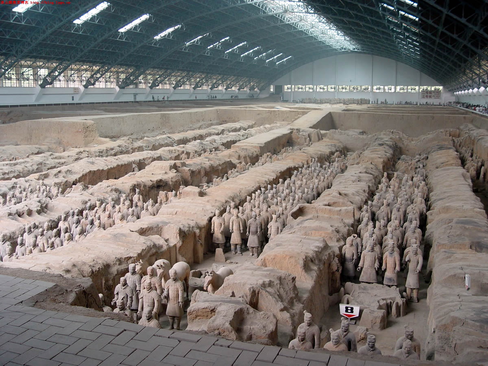
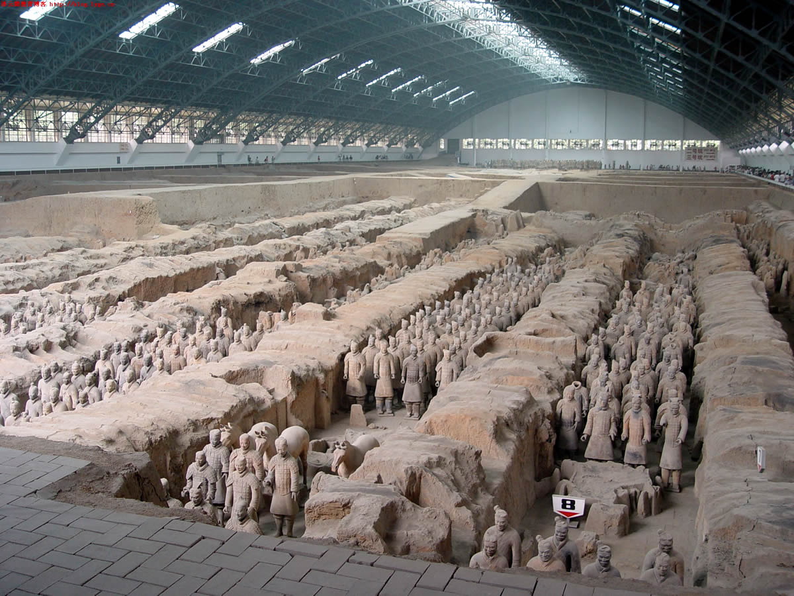

People's Republic of China
Language: Mandarin Chinese
Currency: Chinese Yuan
Attractions: Big Buddha, The Great Wall, Museum of Qin Terra-cotta warriors, and Chimelong Safari Park
Visa Required: Yes
Getting There:
From New York City: 1-stop flights to 19 cities [Average Cost: $1,793] (19h 20m+)
From Los Angeles: Non-stop flights to 1 city [Average Cost: $1,726] (18h 35m)
From San Francisco: 1-stop flights to 20 cities [Average Cost: $1,673] (18h+)
From Seattle: 1-stop flights to 14 cities [Average Cost: $1,917] (15h 35m+)
From Honolulu: 1-stop flights to 12 cities [Average Cost: $1,697] (20h 55m+)
Overview: China, located in eastern Asia at the western shore of the Pacific Ocean, spreads over a vastly diverse geographical area of 9.6 million square kilometers. Since the 1980's China has been drawing a lot of attention to Western tourists to explore its beauty and culture. Most travelers find the country easy to navigate with many large cities including Beijing, Shangai, and Hong Kong are popular cities. Note that China has extremely strict covid restrictions as of 2023, with a negative test required upon departure and a minimum 10-day quarantine is required upon arrival. Covid lockdowns can also occur in any part of China, with government officials instructing people not to leave their homes.
 
